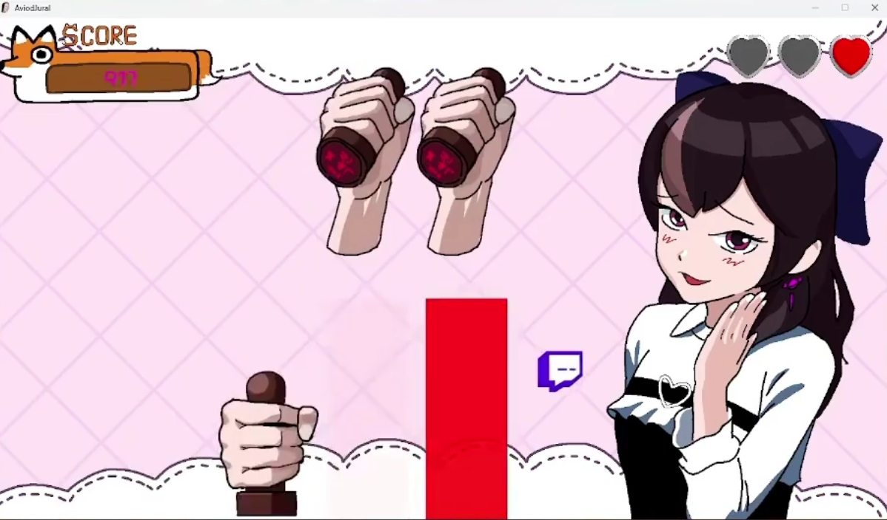
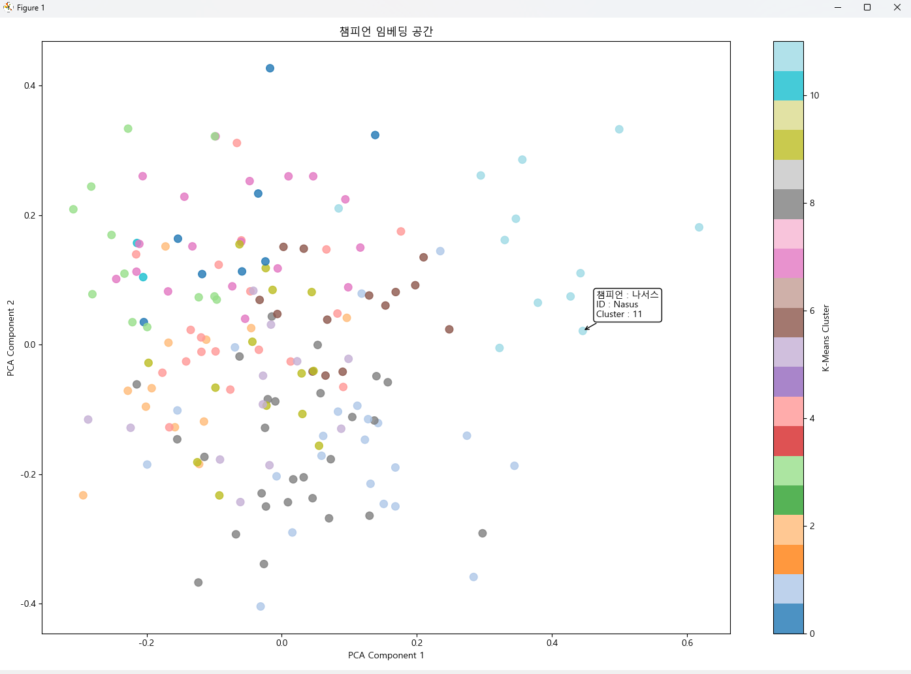
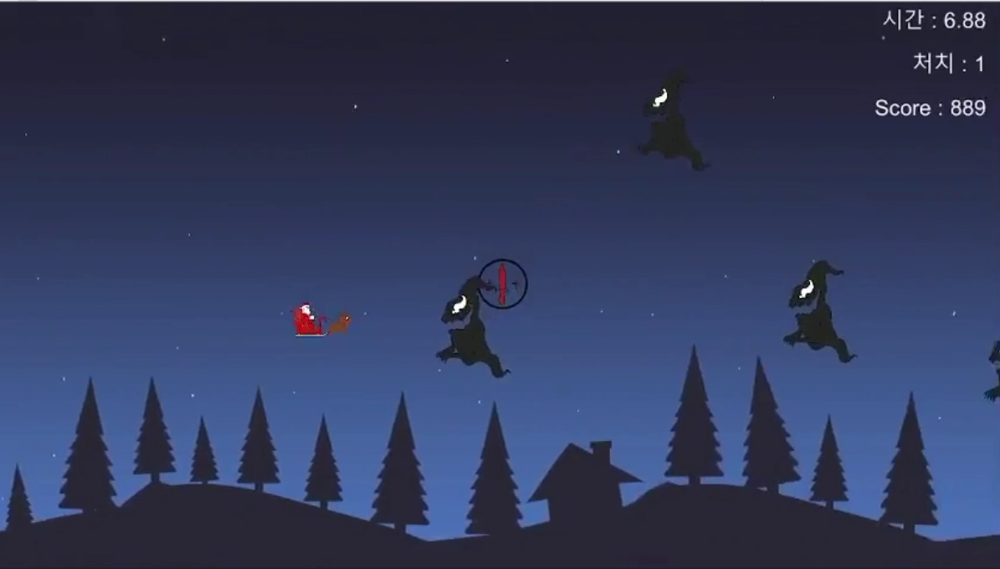

02UNITY · 2D애교피하기
즐겨보던 방송인을 소재로 만든 2D 피하기 팬게임.
SELECTED PROJECTS 03
카드를 선택하면 각 프로젝트의 내용을 볼 수 있습니다.

01↗PYTHON · SEMANTIC GAME챔피언 스킬 설명의 의미를 따라 정답을 추리하는 게임.

02UNITY · 2D즐겨보던 방송인을 소재로 만든 2D 피하기 팬게임.

03UNITY · 2D SHOOTER고등학교 동아리에서 제작해 학교 축제에 전시한 슈팅 게임.